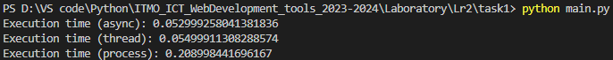

Задача 1
Каждый из подходов используется для решения задачи суммирования всех чисел от 1 до 1000000, разбивая вычисления на несколько параллельных задач для ускорения выполнения.
Async \ Await
import asyncio
from value import N,num_tasks
async def calculate_sum(start, end):
return sum(range(start, end))
async def main():
tasks = []
step = N // num_tasks
for i in range(num_tasks):
start = i * step + 1
end = (i + 1) * step + 1 if i < num_tasks - 1 else N+1
tasks.append(asyncio.create_task(calculate_sum(start, end)))
partial_sums = await asyncio.gather(*tasks)
total_sum = sum(partial_sums)
print("Total sum:", total_sum)
if __name__ == "__main__":
import time
start_time = time.time()
asyncio.run(main())
print("Execution time (async):", time.time() - start_time)
Threading
import threading
from value import N,num_tasks
def calculate_sum(start, end, result):
partial_sum = sum(range(start, end))
result.append(partial_sum)
def main():
result = []
threads = []
step = N // num_tasks
for i in range(num_tasks):
start = i * step + 1
end = (i + 1) * step + 1 if i < num_tasks - 1 else N+1
thread = threading.Thread(target=calculate_sum, args=(start, end, result))
threads.append(thread)
thread.start()
for thread in threads:
thread.join()
total_sum = sum(result)
print("Total sum:", total_sum)
if __name__ == "__main__":
import time
start_time = time.time()
main()
print("Execution time (thread):", time.time() - start_time)
Multiprocessing
import multiprocessing
from value import N,num_tasks
def calculate_sum(start, end, result):
partial_sum = sum(range(start, end))
result.put(partial_sum)
def main():
result = multiprocessing.Queue()
processes = []
step = N // num_tasks
for i in range(num_tasks):
start = i * step + 1
end = (i + 1) * step + 1 if i < num_tasks - 1 else N+1
process = multiprocessing.Process(target=calculate_sum, args=(start, end, result))
processes.append(process)
process.start()
for process in processes:
process.join()
total_sum = 0
while not result.empty():
total_sum += result.get()
print("Total sum:", total_sum)
if __name__ == "__main__":
import time
start_time = time.time()
main()
print("Execution time (process):", time.time() - start_time)
Результаты сравнения
 Асинхронное программирование: Подход async оказался самым быстрым. Это объясняется тем, что асинхронное программирование отлично подходит для задач, ограниченных вводом/выводом (например, сетевых операций), когда программа проводит много времени в ожидании завершения операций ввода/вывода.
Многопоточность: Подход thread оказался немного медленнее подхода async. Это связано с тем, что глобальная блокировка интерпретатора Python (GIL) может препятствовать истинному параллелизму в потоках, но они все равно могут быть полезны для задач, ограниченных вводом/выводом.
Многопроцессорность: Подход process оказался самым медленным. Это связано с тем, что создание нового процесса требует больше ресурсов, чем создание нового потока или асинхронной задачи. Однако многопроцессорность может обеспечить истинный параллелизм и она полезна для задач, ограниченных процессором.
Выводы
В заключение, лучший подход зависит от характера задач. Для задач, ограниченных вводом/выводом, асинхронное программирование или многопоточность могут быть более эффективными. Для задач, ограниченных процессором, многопроцессорность может быть лучшим выбором.